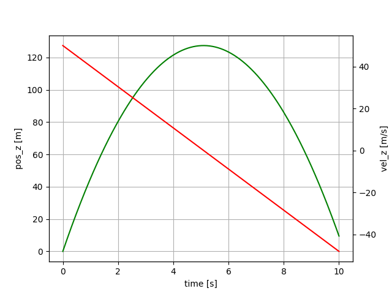
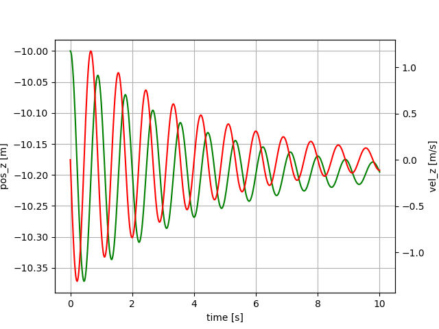
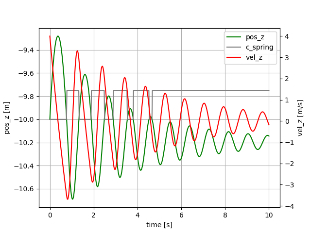
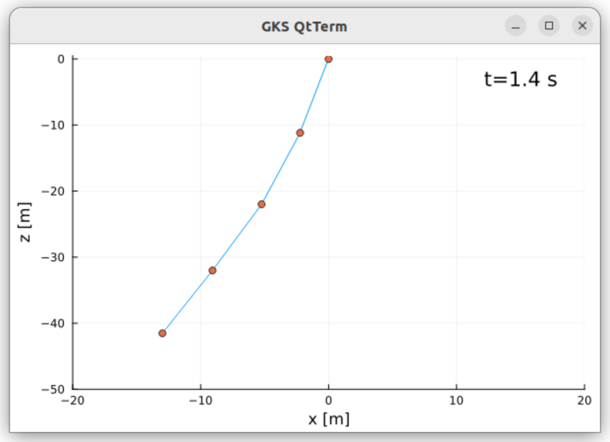

Examples
A sequence of examples, from a simple mass attached to a spring-damper element to a full segmented tether model with real-out and aerodynamic drag attached.
| Name | Description | Learning objective |
|---|---|---|
| Tether_01 | Mass, thrown upwards, then falling | Learn how to define a model, simulate it and plot the results |
| Tether_02 | Mass, attached to a spring-damper | Learn how to model a spring in 3D |
| Tether_03 | Mass, with non-linear spring-damper | Learn how to model DAE systems with discontinuities |
| Tether_04 | Multi-segment tether | Learn how to use arrays of equations |
| Tether_05 | Segmented tether with correct force distribution | Learn how to distribute the spring force over two masses |
| Tether_06 | Multi-segment tether reeling out | Learn to model a tether with changing unstretched length |
| Tether_07 | Segmented tether with aerodynamic drag | Learn how to model tether drag |
Nomenclature:
- ODE: Ordinary differential equations
- DAE: Differential algebraic equations
Mass, thrown upwards, then falling
Use the provided script to start Julia from the Tethers.jl folder:
cd repos/Tethers.jl
./bin/run_juliaFrom the Julia prompt, run the simulation:
include("src/Tether_01.jl")You should see a plot similar to:

This example shows a mass that is thrown upwards, slows down and then falls.
Julia code: Tether_01.jl
These differential equations define the model:
D = Differential(t)
eqs = vcat(D.(pos) ~ vel,
D.(vel) ~ acc,
acc .~ G_EARTH)The term D.(pos) means "Apply the differential D(t) to all elements of the vector pos". The second term defines that the differential of the velocity vector must be equal to the acceleration. For equality in symbolic equations the character ~ has to be used, because the character = has the meaning "assign a value to a variable" which is not what we are doing here. The third equation means that all elements of the acceleration vector must be equal to the elements of the gravity vector. We end up with an array of 3x3` equations.
The next lines are:
@named sys = ODESystem(eqs, t)
simple_sys = structural_simplify(sys)This means we create a named ordinary equation system, depending on t. Then we simplify the system symbolically (order reduction). If you type sys in the Julia REPL (command line) you can see that the original system had 9 equations, the second line above created a system with only six equations. This step helps to speed up the simulation and often also removes algebraic loops which makes the ODE a lot simpler to solve numerically later on.
Now the parameters of the integrator are defined:
duration = 10.0
dt = 0.02
tol = 1e-6
ts = 0:dt:durationThe time step $dt$ is the interval in which the solution shall be stored, NOT the time step of the integrator. The integrator uses a variable time step which can be much smaller or much larger as determined by the required tolerance, in this example set to $tol=10^{-6}$. The variable $ts$ is a range object defining the sampling times for the result.
In the next lines, we define the ODE problem and finally, we solve it using the Rodas5 solver with the given parameters. The second parameter defines the initial conditions. We use nothing here because we defined the initial conditions already in the model.
prob = ODEProblem(simple_sys, nothing, (0.0, duration))
@time sol = solve(prob, Rodas5(), dt=dt, abstol=tol, reltol=tol, saveat=ts)The macro @time measures the compilation and execution time of calling the function solve(). The function is compiled only when called the first time.
Python version as comparison
From the Julia prompt execute:
include("src/RunTether.jl")This will install Python, Matplotlib and Assimulo and execute the script Tether_01.py.
Python code: Tether_01.py
If you compare the Python and the Julia scripts you can see that:
- the Julia script is shorter and easier to read
- Julia is about 16 times faster when running the simulation
Mass, attached to a spring-damper
From the Julia prompt, run the simulation:
include("src/Tether_02.jl")
Mass, attached to a spring-damper element. One end of the spring is attached at the origin, the second end is attached to the mass. Mass initially below the origin, spring un-stretched. Z-axis pointing upwards.
Julia code: Tether_02.jl
Mass, with non-linear spring damper
include("src/Tether_03.jl")
Mass, attached to a non-linear spring-damper element. One end of the spring is attached at the origin, and the second end is attached to the mass. Mass initially below the origin, spring un-stretched. Z-axis pointing upwards.
Initial velocity $4 m/s$ upwards. The compression stiffness is zero. The grey line shows that the stiffness is zero at the beginning, and has the nominal value at the end. Example: Tether_03.jl.
Thanks to the package ModelingToolkit.jl the system description is very compact and readable:
eqs = vcat(D.(pos) ~ vel,
D.(vel) ~ acc,
norm1 ~ norm(pos),
unit_vector ~ -pos/norm1, # direction from point mass to origin
spring_vel ~ -unit_vector ⋅ vel,
c_spring ~ c_spring0 * (norm1 > abs(l0)),
spring_force ~ (c_spring * (norm1 - abs(l0)) + damping * spring_vel) * unit_vector,
acc ~ G_EARTH + spring_force/mass)The same in Python: Python code: Tether_03.py.
Using a callback
By using a callback to detect exactly when the transition from a stiff tether segment to a loose tether segment happens we can increase the accuracy of the simulation. Julia code: Tether_03b.jl.
We only have to add the following lines of code:
function condition(u, t, integrator) # Event when condition(u,t,integrator) == 0
norm(u[1:3]) - abs(L0)
end
function affect!(integrator)
println(integrator.t) # Not needed, just to show that the callback works
end
cb = ContinuousCallback(condition, affect!)and add the parameter callback = cb to the line that calls the solver:
sol = solve(prob, Rodas5(), dt=dt, abstol=tol, reltol=tol, saveat=ts, callback = cb)Using a callback with Python
In Python you would have to add the following attribute:
sw0 = [vel_1[2] > 0] # array of booleans; true means the tether segment is loose (l < l_0)and the following methods:
def state_events(self, t, y, yd, sw):
"""
This is our function that keeps track of our events. When the sign
of any of the events has changed, we have an event.
"""
# calculate the norm of the vector from mass1 to mass0 minus the initial segment length
event_0 = np.linalg.norm(y[3:6]) - L_0
return np.array([event_0])
def handle_event(self, solver, event_info):
"""
Event handling. This functions is called when Assimulo finds an event as
specified by the event functions.
"""
state_info = event_info[0] # We are only interested in state events
if state_info[0] != 0: # Check if the first event function has been triggered
if solver.sw[0]: # If the switch is True the pendulum bounces
print(solver.t)Example: Tether_03b.py. As you can see, logging of calculated variables is not possible with Assimulo (easy with ModelingToolkit in Julia). You need to re-calculate them after the simulation.
Benchmarking non-linear simulation
Using a callback slows the simulation down, but not much. Try it out:
include("src/Tether_03c.jl")Output on a fast PC:
Solving the system without callback...
0.000606 seconds (8.06 k allocations: 257.672 KiB)
Press any key...
Solving the system with callback...
0.000741 seconds (9.93 k allocations: 365.812 KiB)
If you zoom in to the points in time where pos_z crosses -10m
you should see a difference...In this example, the gain of accuracy is very small, but that can be different in other simulations. For benchmarking we call solve twice: The first call ensures that the code is compiled, and the second call measures the execution time of the code.
Python The script, which executes the Python code with callbacks:
include("src/RunTether_03b.jl")reports 31 ms for solving the problem (without printing). Without callbacks:
include("src/RunTether_03.jl")still, 20 ms are needed.
Multi-segment tether
Using 2D arrays of variables allows to simulate a multi-segment tether:
@variables pos(t)[1:3, 1:segments+1] = POS0
@variables vel(t)[1:3, 1:segments+1] = VEL0
@variables acc(t)[1:3, 1:segments+1] = ACC0In this case, it is important to calculate the initial conditions of each particle such that they are physically feasible:
G_EARTH::Vector{Float64} = [0.0, 0.0, -9.81] # gravitational acceleration [m/s²]
L0::Float64 = 10.0 # initial segment length [m]
V0::Float64 = 4 # initial velocity of lowest mass [m/s]
segments::Int64 = 2 # number of tether segments [-]
POS0 = zeros(3, segments+1)
VEL0 = zeros(3, segments+1)
ACC0 = zeros(3, segments+1)
SEGMENTS0 = zeros(3, segments)
UNIT_VECTORS0 = zeros(3, segments)
for i in 1:segments+1
POS0[:, i] .= [0.0, 0, -(i-1)*L0]
VEL0[:, i] .= [0.0, 0, (i-1)*V0/segments]
end
for i in 2:segments+1
ACC0[:, i] .= G_EARTH
end
for i in 1:segments
UNIT_VECTORS0[:, i] .= [0, 0, 1.0]
SEGMENTS0[:, i] .= POS0[:, i+1] - POS0[:, i]
endThe first example of such a model is the script Tether_04.jl which is derived from the last example.
Segmented tether with correct force distribution
In the script Tether_05.jl, the spring force is distributed correctly on the two masses attached to the spring as shown here:
# loop over all tether particles to apply the forces and calculate the accelerations
for i in 1:(segments+1)
global eqs2; local eqs
eqs = []
if i == segments+1
push!(eqs, total_force[:, i] ~ spring_force[:, i-1])
push!(eqs, acc[:, i] ~ G_EARTH + total_force[:, i] / (0.5 * mass))
elseif i == 1
push!(eqs, total_force[:, i] ~ spring_force[:, i])
push!(eqs, acc[:, i] ~ zeros(3))
else
push!(eqs, total_force[:, i] ~ spring_force[:, i-1] - spring_force[:, i])
push!(eqs, acc[:, i] ~ G_EARTH + total_force[:, i] / mass)
end
eqs2 = vcat(eqs2, reduce(vcat, eqs))
endWe loop over the particles. The first and the last particle only one spring force is acting. On the other particles two spring forces are acting in the opposite direction. Because the first particle is fixed we set its acceleration to zero.
Julia code: Tether_05.jl
Python code: Tether_05.py
Finally, in this example, we plot the result dynamically as 2D video. Screenshot:

Multi-segment tether reeling out
In this example, we assume a constant reel-out speed of $V_{RO}=2m/s$. When reeling out the following values need to be dynamically calculated:
- unstretched length of a tether segment
- mass of the tether segment
- spring constant
- damping constant
We do this in the following way at line 76ff:
length ~ L0 + V_RO*t
m_tether_particle ~ mass_per_meter * (length/segments)
c_spring ~ C_SPRING / (length/segments)
damping ~ DAMPING / (length/segments)where L0 is the unstretched length of the complete tether at $t=0$.
Julia code: Tether_06.jl
The IDA solver, used for Python has a very high numerical damping. Therefore we had to multiply the damping coefficient with a factor of $0.045$ to achieve a more-or-less realistic result.
Python code: Tether_06.py
Refactoring the code, add a Settings struct and splitting it into functions
Julia code: Tether_06b.jl.
If you want to have fast code, that can be reused and tested using unit tests, then it is better to put your code in functions and to avoid global variables. We demonstrate that in this example.
First, the settings are stored in a struct type:
@with_kw mutable struct Settings @deftype Float64
g_earth::Vector{Float64} = [0.0, 0.0, -9.81] # gravitational acceleration [m/s²]
l0 = 50 # initial tether length [m]
v_ro = 2 # reel-out speed [m/s]
d_tether = 4 # tether diameter [mm]
rho_tether = 724 # density of Dyneema [kg/m³]
c_spring = 614600 # unit spring constant [N]
damping = 473 # unit damping constant [Ns]
segments::Int64 = 5 # number of tether segments [-]
α0 = π/10 # initial tether angle [rad]
duration = 10 # duration of the simulation [s]
save::Bool = false # save png files in folder video
endWhen defining a struct it is good to give a concrete type to each field. Here, we use Float64 as default, as defined in the first line. Apart from this type we also use the type Int64 for integer values and Bool for a boolean value.
Then we split the code into the functions:
function calc_initial_state(se) # determine the initial state
function model(se) # create the model
function simulate(se, simple_sys) # run the simulation
function plot2d(se, sol, pos, reltime, line, sc, txt, j) # plot the state for one point in time
function play(se, sol, pos) # play the simulation result, the solution
function main() # the main program, calling all the other functionsThe main() function looks like this:
function main()
se = Settings()
simple_sys, pos, vel = model(se)
sol = simulate(se, simple_sys)
play(se, sol, pos)
endUsing a callback
By using a callback to detect exactly when the transition from a stiff tether segment to a loose tether segment happens we can increase the accuracy of the simulation. Julia code: Tether_06c.jl.
The following lines had to be added:
local cb
for i in 1:se.segments
cbi = [norm([pos[1, i+1] - pos[1, i], pos[2, i+1] - pos[2, i], pos[3, i+1] - pos[3, i]]) ~ abs(se.l0)/se.segments]
if i == 1
cb = cbi
else
cb = vcat(cb, cbi)
end
end
@named sys = ODESystem(eqs, t; continuous_events = cb)Segmented tether with aerodynamic drag
In the script Tether_07.jl, the tether drag has been added.
The following lines calculate the tether drag force:
v_app_perp[:, i] ~ v_apparent[:, i] - (v_apparent[:, i] ⋅ unit_vector[:, i]) .* unit_vector[:, i],
norm_v_app[i] ~ norm(v_app_perp[:, i]),
half_drag_force[:, i] ~ 0.25 * se.rho * se.cd_tether * norm_v_app[i] * (norm1[i]*se.d_tether/1000.0)In the following for loop the spring and drag forces are applied to the particles:
for i in 1:(se.segments+1)
eqs = []
if i == se.segments+1
push!(eqs, total_force[:, i] ~ spring_force[:, i-1] + half_drag_force[:, i-1])
push!(eqs, acc[:, i] ~ se.g_earth + total_force[:, i] / (0.5 * m_tether_particle))
elseif i == 1
push!(eqs, total_force[:, i] ~ spring_force[:, i] + half_drag_force[:, i])
push!(eqs, acc[:, i] ~ zeros(3))
else
push!(eqs, total_force[:, i] ~ spring_force[:, i-1] - spring_force[:, i]
+ half_drag_force[:, i-1] + half_drag_force[:, i])
push!(eqs, acc[:, i] ~ se.g_earth + total_force[:, i] / m_tether_particle)
end
eqs2 = vcat(eqs2, reduce(vcat, eqs))
endIf you run the example you can see that the aerodynamic drag adds a lot of damping, the oscillations nearly die out in about 30s.